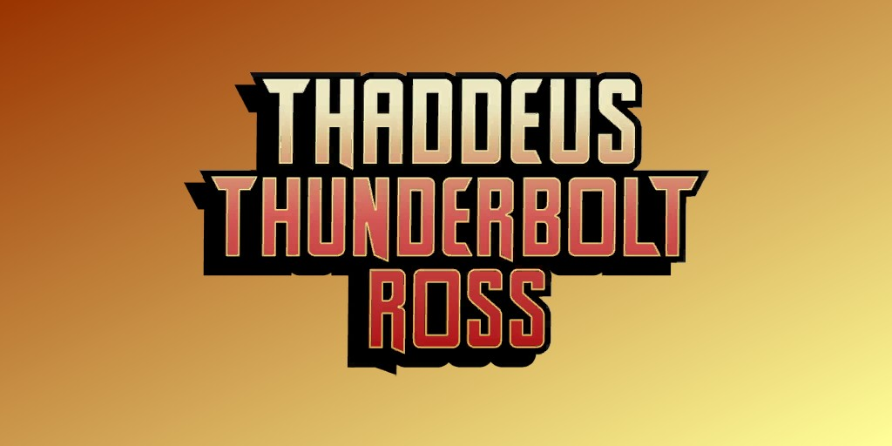
Thaddeus "Thunderbolt" Ross (Terre-616)
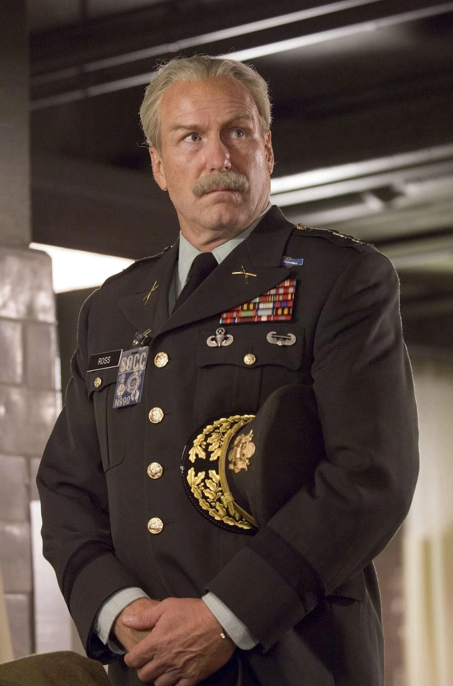
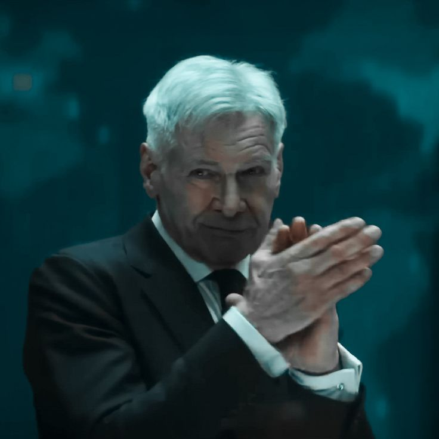
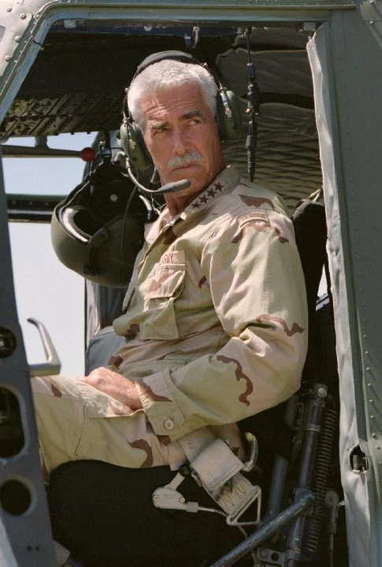
Origines :
Le Général Thaddeus E. Ross est né au New Hampshire, dans une famille de militaires.
Enfant, il étudia l'histoire militaire et commença à piloter des avions de spectacle durant son adolescence.
Il s'engagea dans l'Académie Militaire des États-Unis et fut par la suite sous le commandement du Capitaine Lee, un officier de l'Army Air Corps.
Ross respectait beaucoup son supérieur, et finira par épouser sa fille, Karen Lee.
Durant la Seconde Guerre Mondiale, Thaddeus fut promu capitaine et lutta sur le front Pacifique, devenant un jeune meneur des combats.
Il reçut le surnom de « Thunderbolt », à cause de ses manœuvres rapides comme l'éclair.
Il participa à une mission en Europe, où il aida à la libération d'un camp de concentration.
A la fin du conflit, il fut promu major.
En 1947, l'Army Air Corps devint l'US Air Force, une branche distincte de l'armée, et Ross fit partie d'une commission d'officiers.
Un peu plus tard, il fut envoyé au centre de recherche nucléaire de Los Alamos, au Nouveau Mexique.
Il y fit la rencontre du Docteur Brian Banner, le père de Bruce Banner.
Lorsque la Corée du Nord tenta d'envahir la Corée du Sud, les États-Unis intervinrent, débutant la Guerre de Corée.
Ross fut promu colonel et participa au conflit, puis deviendra général en 1953.
A son retour au centre, il s'ennuya de la monotonie de ses missions administratives, mais fut toutefois promu Lieutenant Général.
Sa femme Karen lui donnera une fille, Betty Ross, mais décédera quelques années plus tard.
Ross, désormais commandant de Desert Base au Nouveau-Mexique (à la fois une base de missiles et un centre de recherches), décida que ce n'était pas un endroit adapté pour élever sa fille, et l'enverra en internat.
Une fois diplômée, la jeune fille revint à la base dans le but de se rapprocher de son père.
Bruce Banner, devenu docteur en physique nucléaire, fut envoyé par le gouvernement pour superviser la construction de son invention, la Bombe Gamma.
Le Général Ross méprisa rapidement le docteur car il n'était pas militaire, et ceci ne s'arrangea pas quand Betty se rapprocha du jeune homme, alors qu'il voulait qu'elle épouse un officier.
Durant le test initial de la Bombe Gamma, un individu s'était aventuré dans la zone d'essai, et Banner fonça pour essayer de sauver le jeune homme, un certain Rick Jones, et fut irradié massivement, ce qui le transforma en un gigantesque monstre gris colérique surnommé « Hulk ».
La créature apparut comme une menace et Ross commença sa traque.
Au début, Banner réussit à cacher qu'il était le Hulk (qui ne lui ressemblait plus une fois transformé), mais Ross le soupçonna rapidement.
Puis, le Pentagone nomma Ross « Chef de l'Opération Hulk », dans le but de trouver, capturer ou de tuer le monstre.
Il continuera de poursuivre Hulk pendant une longue période, et Banner devint un fugitif recherché.
Ross pensait que Banner ne pouvait peut-être pas contrôler son alter ego, et donc que Hulk était une menace nationale.
Il appréciait cette période qui lui rappelait son temps au front, plus intense que son emploi administratif dans l'US Air Force.
Hulk lui échappa encore et encore, ce qui fit grandir la détermination de Ross à capturer le monstre, transformant cette mission en réelle obsession, à la limite du fanatisme.
Pendant ces années, Ross rencontra d'autres menaces Gamma, comme l'Abomination ou le Leader, et il se mit peu à peu à respecter Banner, victime lui aussi des rayons Gamma.
Quand Banner réussit à maîtriser sa transformation tout en conservant son intelligence, Ross s'adoucit et accepta même que sa fille se marie à lui.
Mais la cérémonie, se déroulant dans la maison familiale, fut troublée par l'intervention du Leader et du Rhino.
Le vilain utilisa un appareil de sa conception pour rendre Hulk sauvage à nouveau.
Cette traque durera des années, jusqu'à ce que Bruce, apparemment guéri de son alter ego vert, demande à nouveau la main de Betty et que cette dernière accepte.
Mais, en pleine cérémonie, Ross apparut armé d'un pistolet, et somma le couple de se séparer.
Le témoin de Bruce, Rick Jones, essaya de le désarmer, mais le désormais ancien militaire l'abattit.
Betty confronta son père avec courage et le persuada de cesser sa vengeance.
Bruce et Betty finirent par se marier, Rick se remit de sa blessure, et Ross fut interné en hôpital psychiatrique.
L'ancien allié de Ross, Clay Quartermain, permit à ce dernier de participer à une expérience du SHIELD pour le transformer au moyen d'une vaste énergie électrique, en utilisant Zzzax (une créature redoutable formée d'un champ électromagnétique psioniquement chargé de forme humanoïde).
Mais l'expérience fut un échec, et la conscience de Ross fut absorbée par la créature, qui se libéra.
Mais l'esprit de Ross parvint à prendre le contrôle de l'entité, et essaya de tuer Bruce Banner et Rick Jones après que ce dernier ne ce soit également transformé en un monstre irradié, nommé A-Bomb.
Après avoir été mis en échec, l'esprit de Ross réintégra son corps en ayant conservé une once du pouvoir de Zzzax.
Mais une nouvelle menace arriva à la Base Gamma : un monstre aux pouvoirs vampiriques qui menaça Betty Ross.
En voyant Hulk se battre de toutes ses forces contre ce monstre, Ross réalisa qu'il avait mal-jugé son gendre, et se jeta sur Nevermind, qui tenta d'absorber sa force vitale.
Mais comme Ross possédait toujours le pouvoir de Zzzax, le monstre ne put se nourrir et Ross libéra un puissant éclair, électrocutant son adversaire jusqu'à la mort.
Cet effort provoqua une crise cardiaque chez le vieil homme, qui s'excusa auprès de sa fille pour toutes les erreurs commises et décéda dans ses bras.
voir : Hulk Rouge
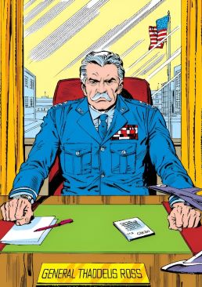
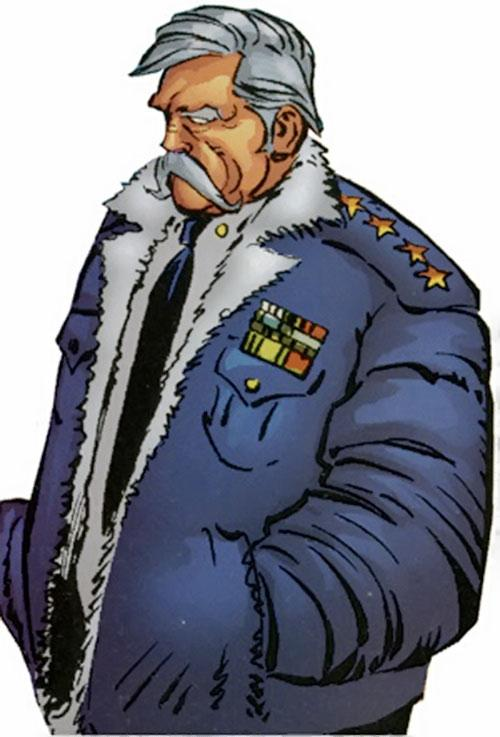
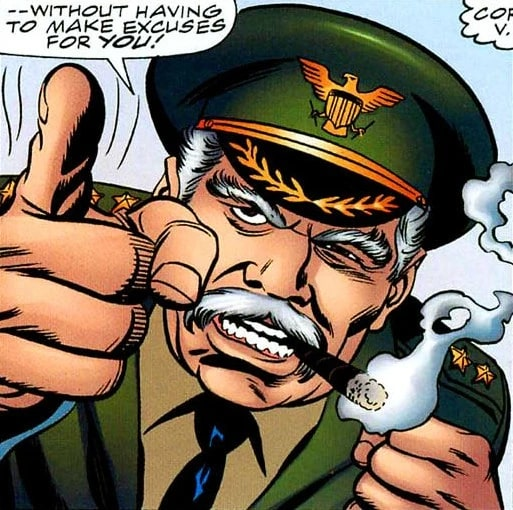
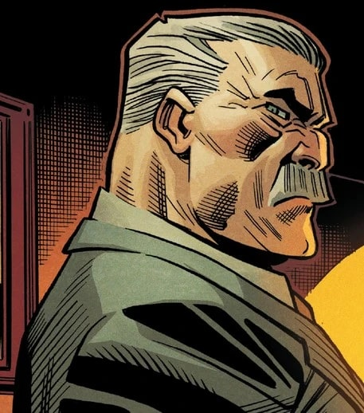
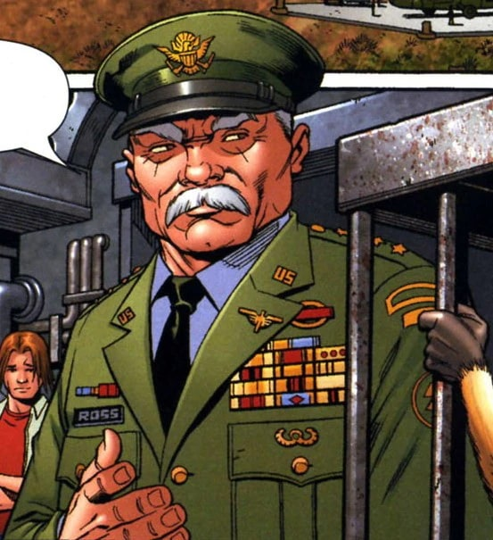
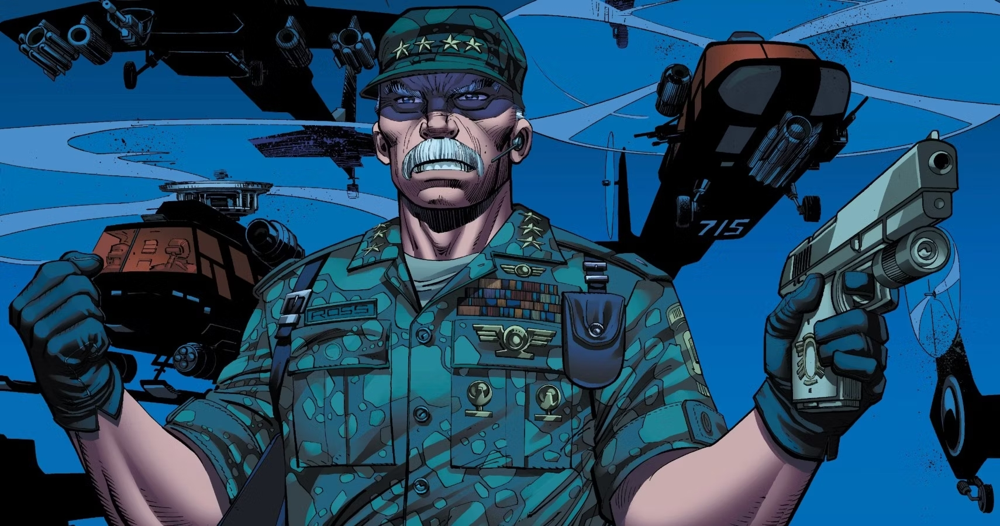

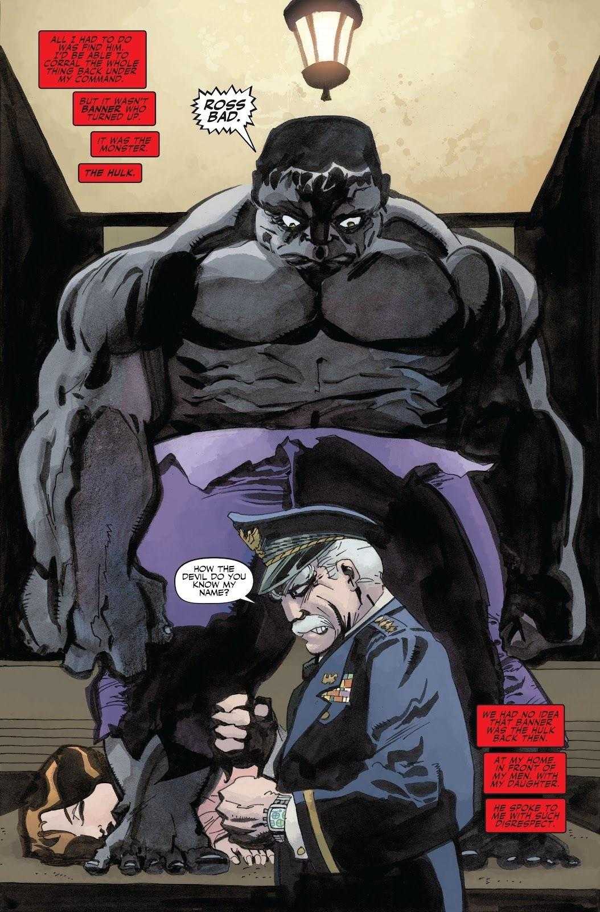
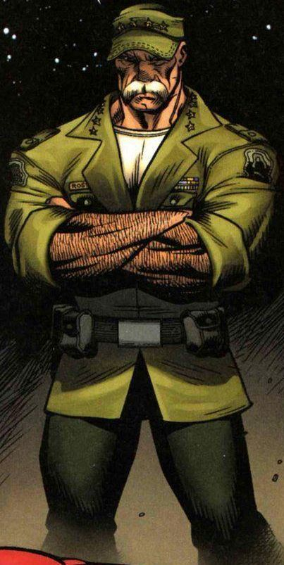
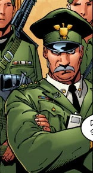
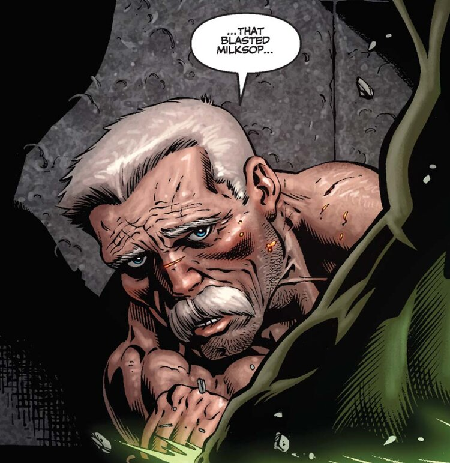
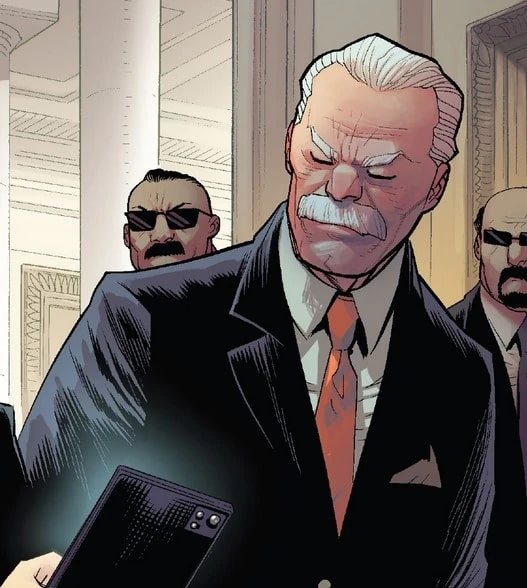
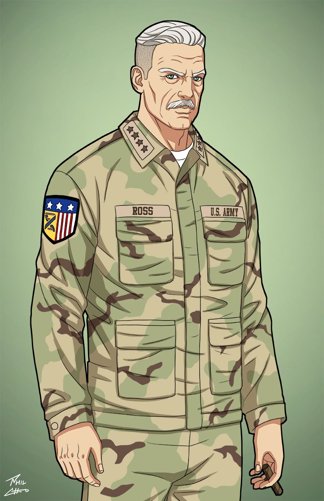
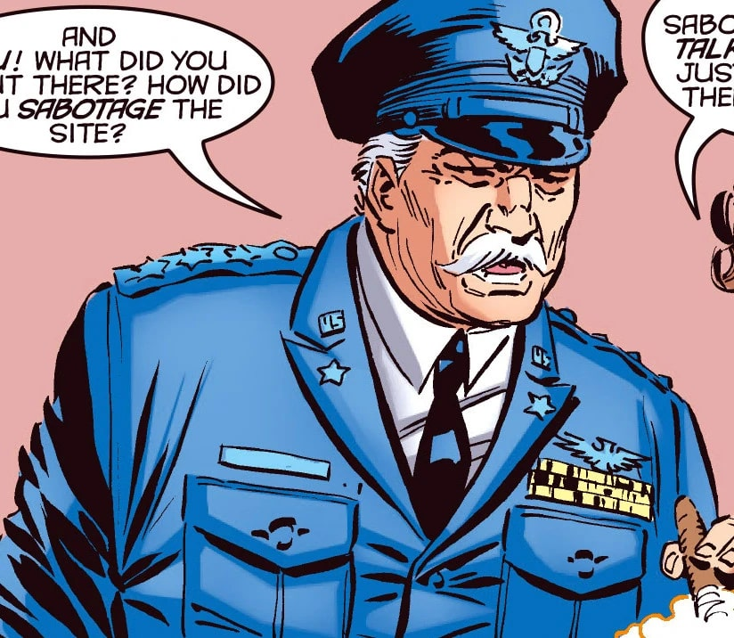
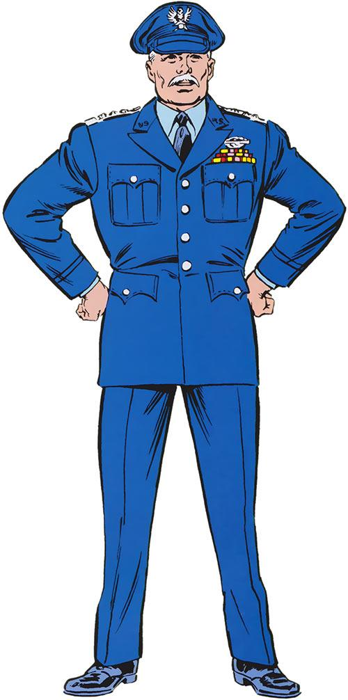
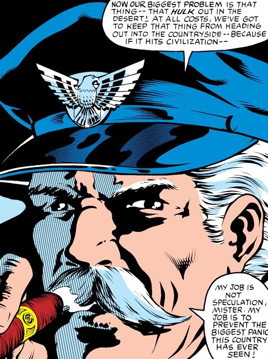
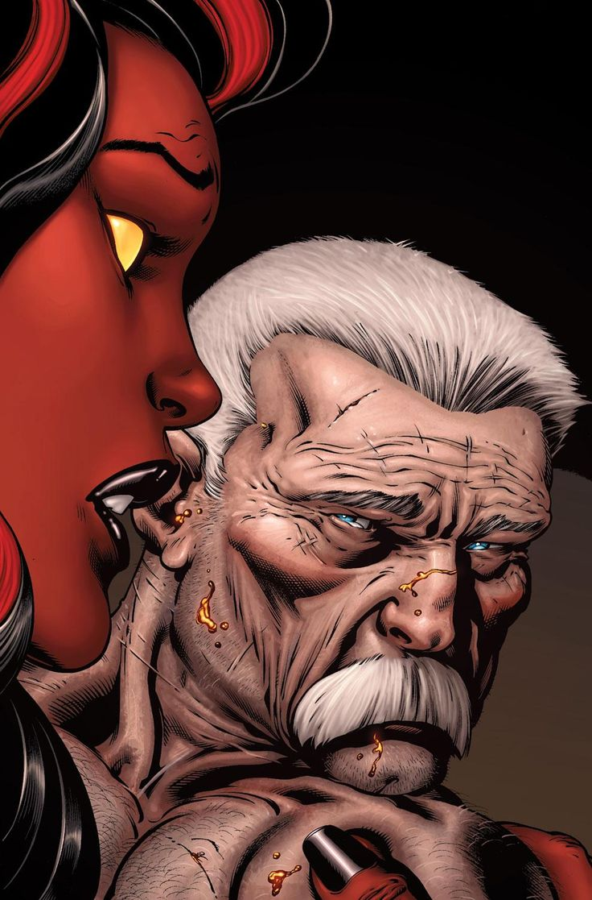
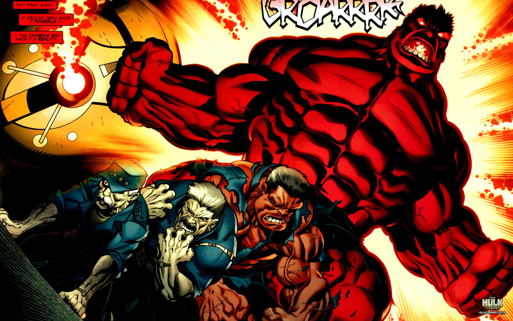
Capacités :
Le Général Ross ne possède aucun super-pouvoir, mais il est un grand stratège militaire et un meneur d'hommes compétent et très doué.
Il est aussi habile avec le maniement des armes que des équipements militaires.
Apparence :
Le Général Thaddeus « Thunderbolt » Ross possède l'apparence typique d'un haut gradé militaire américain, autoritaire et rigide.
Il est généralement représenté comme un homme âgé mais robuste, à la carrure imposante et au visage sévère, marqué par les années de service militaire.
Il arbore presque toujours une épaisse moustache grise, et des cheveux gris / blanchissants.